International Institute of Tropical Agriculture (IITA)
Introduction
Data wrangling is the process of transforming raw data into a more organized and structured format, which facilitates improved insights and better decision-making. Imagine your data as a set of puzzle you need to solve, data wrangling is a tool that will significantly help you to organise the data, making it much easier to solve the data puzzles.
There are six stages involved in data wrangling, they are highlighted below:
Data Discovery: Data discovery is the process of uncovering and exploring valuable insights within data. This usually involves collecting data from different sources, transforming and merging it, and employing visualization and analytical methods to reveal patterns, trends, and insights. The aim is to make data more accessible and actionable for decision-making, enabling users to grasp complex information and address specific business questions.
Data discovery is the process that enables users to visually explore data and apply advanced analytics to uncover patterns, gain insights, answer specific questions, and extract value from business information. It involves integrating and transforming data from multiple sources, analyzing data structures, and using visualization techniques to gain insights and extract valuable information.
Data Structuring: Data structures are specialized formats for organizing data on a computer to ensure efficient processing, storage, and retrieval. They provide a systematic way to manage information, making it easier to access and use. A data structure is a method for organizing and managing data. It helps in gathering different types of data, whether structured or unstructured, and transforming it into useful and meaningful information. An array is an example of data structure.
Data Cleaning: Data cleaning is a vital stage in the data science workflow, focusing on detecting and rectifying errors, inconsistencies, and inaccuracies in the data to enhance its quality and usability. This process is crucial because raw data often contains noise, gaps, and inconsistencies that can adversely affect the accuracy and dependability of the insights generated from it. Data cleaning involves preparing data for analysis by correcting or eliminating data that is incorrect, incomplete, irrelevant, duplicated, or poorly formatted. It involves steps such as removing unwanted observations, managing structure errors, managing unwanted outliers and handling missing data.
Data Enriching: After transforming your data into a more usable format, evaluate whether you have all the necessary information for your analysis. If not, you can enhance it by incorporating values from additional datasets. This is also a good time to consider adding metadata to your database.
Data validation: Once you’ve converted your data into a more usable format, assess if you have all the information required for your analysis. If anything is missing, you can augment it by integrating data from other sources. Additionally, this is an opportune moment to add metadata to your database. Validation guarantees the quality and reliability of your processed data. It involves checking for inconsistencies, verifying data integrity, and ensuring the data meets predefined standards. This process helps build confidence in the dataset’s accuracy and ensures it is suitable for meaningful analysis.
Data Publishing: Data publishing refers to the process of making data available to users, often by sharing or disseminating it through various platforms or channels. This can involve publishing datasets on websites, data repositories, or databases, ensuring that the data is accessible, usable, and properly documented for others to analyze or utilize.
Also, there are three main aspect of data wrangling. These includes:
Tibbles
Data import
Tidy data
Tibbles
Tibbles are a key feature of the tidyverse, distinguishing it from most other R packages, which typically use standard data frames. You can convert a dataset to tibbles with as_tibble()
What are the common differences between a tibble and a dataframe
A tibble is considered a neater format of a data frame and its often used in tidyverse and ggplot2 packages. Tibble has an advanced print function and only shows the first ten rows with all the columns fitted on the screen. The data type is written just below the heading of each column. This does not apply to data frame. Tibble can be used for indexing such as $, [[ ]]. $ extracts using name while [[ ]] extract by name and position.
Example
set.seed(234)df <-tibble(x =runif(5), y =rnorm(5))# Extract by namedf$x
Data import can be done with the readr package which is a core tidyverse package. This is used for reading data stored in text file spreadsheets into R. Some readr’s function are used in turning flat files into dataframe. You can load readr using the code library(readr), this gives you access to functions such as: read_csv() for reading comma delimited files, read_csv2() for semicolon separated files, read_table for white space separated values etc.
# install readr packageinstall.packages("readr")# load the packagelibrary(readr)# read the csv file into a tibbledata <-read_csv("steptoe.morex.pheno.csv")data
# A tibble: 2,432 × 10
gen env amylase diapow hddate lodging malt height protein yield
<chr> <chr> <dbl> <dbl> <dbl> <dbl> <dbl> <dbl> <dbl> <dbl>
1 Steptoe MN92 22.7 46 150. NA 73.6 84.5 10.5 5.53
2 Steptoe MTi92 30.1 72 178 10 76.5 NA 11.2 8.64
3 Steptoe MTd92 26.7 78 165 15 74.5 75.5 13.4 5.90
4 Steptoe ID91 26.2 74 179 NA 74.1 111 12.1 8.63
5 Steptoe OR91 19.6 62 191 NA 71.5 90 11.7 5.34
6 Steptoe WA91 23.6 54 181 NA 73.8 112 10 6.27
7 Steptoe MTi91 21 62 181 NA 70.8 98 12 4.10
8 Steptoe MTd91 NA NA 181 NA NA 82 NA 7.07
9 Steptoe NY92 NA NA 176 0 NA 77.5 NA 6.05
10 Steptoe ON92 NA NA 198 50 NA 95 NA 3.70
# ℹ 2,422 more rows
Importing an Excel Version (XLSL)
The readxl library can also be assessed from the readr package and it is used to import excel files. The functions to import excel files are read_excel() or read_xlsx(). The read_excel() auto detect the format while read_xlsl()permits more than two sheets in a file.
Example
# install the readxl package install.packages('readxl')# load the readxl packagelibrary(readxl)# Read the Excel file into a tibbledat <-read_excel("Sugar cane.xlsx", sheet ="Sugar cane")dat
Tidy data considers ways to convert your messy dataset into format that are clean and can be easily analysed. The aim of tidyr is to assist in creating tidy data, where:
Each variable is represented as a column, and each column corresponds to a variable.
Each observation is represented as a row, and each row corresponds to an observation.
Each value is contained within a cell, with each cell holding a single value.
The principles of tidy data offer a standardized method for organizing data values within a dataset. The tidy data standard is designed to ease the initial exploration and analysis of data and to streamline the creation of data analysis tools that integrate seamlessly.
Various functions can be used in the tidyr package, functions such as pivoting (longer and wider), rectangling, nesting, splitting, replace and drop na etc.
# We can list the column names using any of this methodsnames(trial01)
[1] "variety" "yield" "height"
colnames(trial01)
[1] "variety" "yield" "height"
# We can extract specific column from a data frame using column name trial01$yield1 <- trial01$yieldtrial01$yield
[1] 6323.30 2515.20 5611.00 7729.00 7843.25
# trial01$Yield. R is case sensitive, yield is different from Yield# We can find the mean of the extracted column using any of the codes belowmean(trial01$yield)
[1] 6004.35
mean(yield1)
[1] 6004.35
mean(trial01$yield)
[1] 6004.35
# We can add a column vector using a new column nametrial01$flowering <-c(87, 101, 88, 120, 90)trial01$flowering <-c(87, 101, 88, 120, 90)trial01
# Read csv file: supply the path to a file and you get the data into Rlibrary(readr)mydata <-read_csv("C:/Users/DOjekere/CGIAR/Fowobaje, Kayode Rapheal (IITA) - Training Materials/2024/R/RMD Training/Example-02.csv")mydata
# I want to display the number of yearshead(example02$year)
[1] 1970 1970 1970 1970 1970 1970
unique(example02$year)
[1] 1970 1971
unique(example02$loc) # having the number of locations
[1] "Lawes" "Brookstead" "Nambour" "RedlandBay"
The pipe |>
Pipes are a powerful tool for clearly expressing a sequence of multiple operations. Object |> (object is usually a tibble, a data) Function(argument1, argument2, …)
We can filter the data with multiple criteria (several arguments)
example02.Lawes3.2<- example02 |>filter(yield >3.2, loc =="Lawes")example02.Lawes3.2<- example02 |>filter(yield >3.2, loc =="Brookstead"| loc =="Lawes")example02.Lawes3.2
When working with many variables, it can be a good practice to narrow the dataset and consider only few variables for analysis. Let’s only consider the location, year, genotype, yield, and height
If we are interested in moving a particular variable to the first column in the dataframe, select() and everything() can do that. We can also move more than one variable
env loc year gen
Length:464 Length:464 Min. :1970 Length:464
Class :character Class :character 1st Qu.:1970 Class :character
Mode :character Mode :character Median :1970 Mode :character
Mean :1970
3rd Qu.:1971
Max. :1971
yield height lodging size
Min. :0.282 Min. :0.2500 Min. :1.00 Min. : 4.000
1st Qu.:1.515 1st Qu.:0.7075 1st Qu.:1.50 1st Qu.: 7.838
Median :2.075 Median :0.8875 Median :2.25 Median : 9.500
Mean :2.047 Mean :0.8831 Mean :2.31 Mean :11.138
3rd Qu.:2.558 3rd Qu.:1.0450 3rd Qu.:3.00 3rd Qu.:14.050
Max. :4.381 Max. :1.7300 Max. :4.75 Max. :23.600
protein oil
Min. :33.20 Min. :13.03
1st Qu.:38.14 1st Qu.:17.97
Median :40.25 Median :19.82
Mean :40.33 Mean :19.92
3rd Qu.:42.20 3rd Qu.:22.09
Max. :48.50 Max. :26.84
But we prefer using summarize from tidyverse
Summarize() collapses a data frame to a single or few row(s)
Data management is an important task during data analysis because most times, datasets do not come in the required shape for analysis and result presentation. Hence, the need for conversion of dataset tables from wide to long format, or vice versa. It is important to understand data frame intuition where variables are in columns, observations are in rows, and values are in the cell.
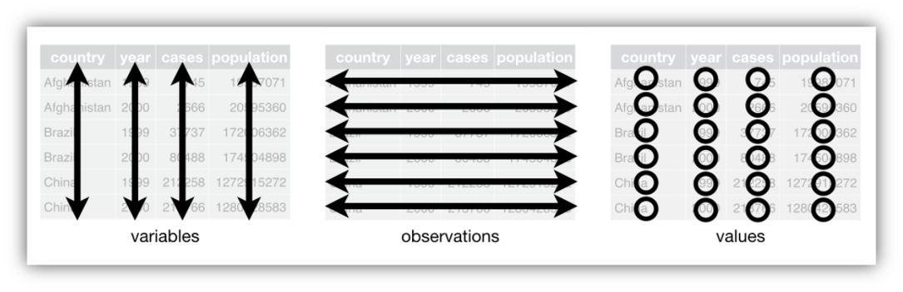
The pivot_wider() or pivot_longer() functions in R tidyverse package help reorganize or reshape data values into the needed layout.
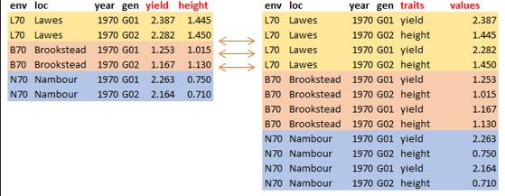
Pivot Longer
A common problem is a dataset where some of the column names are not names of variables, but values of a variable. The function pivot_longer() transform the dataset in wide format to longer.
Below is the basic R syntax needed to transform data from a wide format to a long format:
We have a data frame with 7 variables (env, loc, year, gen, yield, height, and lodging) and 232 observations. The data frame is stored under an object named dat
As you can see, the dataset is already in wide format as seen from the previous slide. To transform the dataset into a long format, we use the function pivot_longer
dat_longer <- dat |>pivot_longer(yield:lodging, names_to ="trait", values_to ="values")
The function pivot_wider() is the opposite of the pivot_longer() function. It transforms the dataset from long format to wider. Below is the basic R syntax needed to transform data from a wide format to a long format:
So far we have seen how tidy data can be reshaped. However, there are occasions when dataset comes from different data sources and we need to combine them together before we proceed further to analysis or result presentation. The dplyr in R tidyverse package offers different mutating join functions to combine datasets together. A mutating join function allows you to combine variables from two tables by matching observations by key variable(s), then copy variables from one table to another.
There are four common mutating joins: left_join, right_join, inner_join, and full_join. They all have the same arguments but return different tables, df1 and df2 are a pair of data frames to join, and by is a unique character vector variable(s) to join the data frames by.
Left Join
left_join(df1, df2, by)
# join matching values from df2 to df1
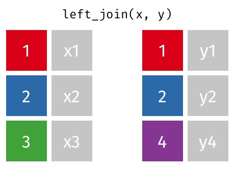
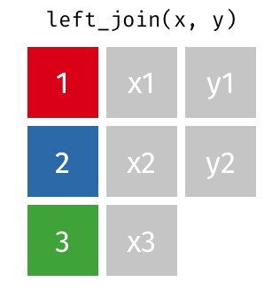
A left join in R is a kind of database join that joins two data frames together by their columns using a shared key. Only the matching rows from the right data frame are included in the result of a left join, which contains all of the rows from the left data frame. NA values are entered for each column in the corresponding data frame if there is no match.
Example To demonstrate how these mutating joins work, let’s import the pair of data frames needed.
# A tibble: 15 × 6
gen yield height size protein oil
<chr> <dbl> <dbl> <dbl> <dbl> <dbl>
1 G01 2.79 0.97 8.35 39.4 NA
2 G02 2.62 0.785 9.75 40.6 NA
3 G03 2.48 0.955 11.4 37.4 NA
4 G04 2.92 0.76 11.1 36.9 NA
5 G05 2.14 0.76 11.9 38.7 NA
6 G06 2.86 0.65 12.2 38.1 NA
7 G07 2.97 0.8 11.2 37.4 NA
8 G08 1.65 0.9 11.8 36.6 NA
9 G09 3.1 0.825 12.2 37.1 NA
10 G10 3.00 0.785 12.0 37.8 NA
11 G11 1.90 0.875 7.4 43.4 NA
12 G12 1.64 1.16 7.45 44.4 NA
13 G13 1.97 1.08 8.25 42.2 NA
14 G14 2.45 0.865 7.65 38.4 NA
15 G15 2.63 0.675 9.05 40.7 NA
The code performs a left join on dat1 and dat2, resulting in a new data frame df_left that contains all rows from the left data frame (dat1) along with matching rows from dat2. Rows in dat1 without a corresponding match in dat2 will have NA in their resulting columns for data from dat2.
Right Join
right_join(df1, df2, by)
# join matching values from df2 to df1
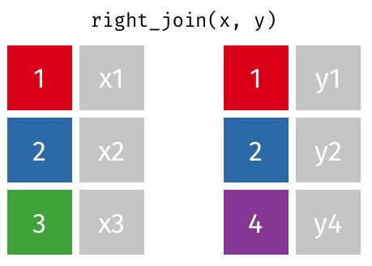
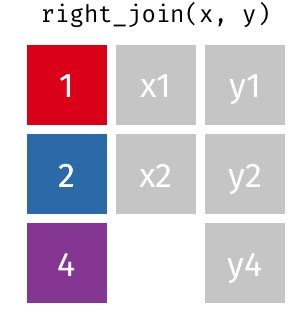
A right join is a type of database join that combines two data frames based on a common key, similar to a left join but with a focus on retaining all the rows from the right data frame. When performing a right join, all rows from the right data frame are included in the result, and only the matching rows from the left data frame are included. If there is no match, the corresponding columns of the left data frame will be filled with NA values
Example
Continuing with the previous data,
# Right joindf_right <-right_join(dat1, dat2)df_right
# A tibble: 15 × 6
gen yield height size protein oil
<chr> <dbl> <dbl> <dbl> <dbl> <dbl>
1 G01 2.39 1.44 8.45 NA 20.9
2 G02 2.28 1.45 9.95 NA 20.7
3 G03 2.57 1.46 10.8 NA 21.3
4 G04 2.88 1.26 10.0 NA 22.0
5 G05 2.39 1.34 11 NA 22.1
6 G06 2.41 1.36 11.8 NA 21.2
7 G07 2.70 1.3 11.8 NA 21.7
8 G08 2.46 0.955 10 NA 21.1
9 G09 2.57 1.03 11.2 NA 21.5
10 G10 2.98 1.16 10.8 NA 20.4
11 G16 1.66 1.42 6.95 NA 19.1
12 G17 1.96 1.44 8.35 NA 18.7
13 G18 1.47 1.58 9.3 NA 19.2
14 G19 2.72 1.33 8.25 NA 20.8
15 G20 2.22 1.37 9.3 NA 20.7
The right join operation retains all rows from the right data frame (dat2) and only those rows from the left data frame (dat1) that match based on the specified keys. If there are entries in dat2 without corresponding matches in dat1, the output will show NA in place of those unmatched entries from dat1
Inner Join
inner_join(df1, df2, by)
# join values from df2 to df1 and retain only matching rows
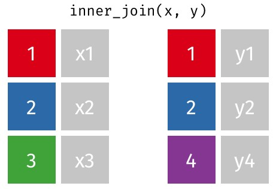
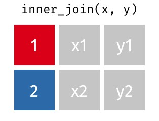
An inner join is a type of database join that combines two data frames (or tables) based on a common key or keys, returning only those rows where there is a match in both data frames. In other words, an inner join retrieves the intersection of the two dataset
# A tibble: 0 × 6
# ℹ 6 variables: gen <chr>, yield <dbl>, height <dbl>, size <dbl>,
# protein <dbl>, oil <dbl>
The resulting data frame (df_inner) contains only those rows where there are matching values in the id column of both dat1 and dat2
Full join
full_join(df1, df2, by)
# join values from df2 to df1 and retain all rows, all values
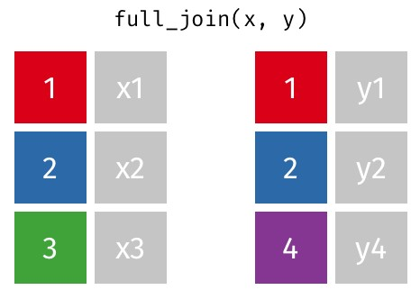
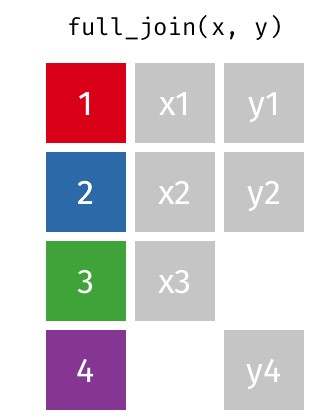
A full join (or full outer join) is a type of database join that combines the results of both left and right joins. This means that a full join returns all the rows from both data frames (or tables), regardless of whether there is a match between them. If a row in one data frame does not have a corresponding match in the other, the result will contain NA (or missing values) for the columns of the unmatched row from the other data frame.
Example
# Full joindf_full <-full_join(dat1, dat2)df_full
# A tibble: 30 × 6
gen yield height size protein oil
<chr> <dbl> <dbl> <dbl> <dbl> <dbl>
1 G01 2.79 0.97 8.35 39.4 NA
2 G02 2.62 0.785 9.75 40.6 NA
3 G03 2.48 0.955 11.4 37.4 NA
4 G04 2.92 0.76 11.1 36.9 NA
5 G05 2.14 0.76 11.9 38.7 NA
6 G06 2.86 0.65 12.2 38.1 NA
7 G07 2.97 0.8 11.2 37.4 NA
8 G08 1.65 0.9 11.8 36.6 NA
9 G09 3.1 0.825 12.2 37.1 NA
10 G10 3.00 0.785 12.0 37.8 NA
# ℹ 20 more rows
The code df_full <- full_join(dat1, dat2) effectively creates a new data frame that combines data from dat1 and dat2, ensuring that all records are retained, either matched or unmatched. This type of join is particularly useful in exploratory data analysis and situations where preserving all relevant data is critical for further analysis and interpretation.
Creating Groups
Data wrangling in R sometimes requires modification or creating a new variable based on certain possible conditions during data analysis.
It is possible to create new variables with the mutate() function in the tidyverse package.
The case_when() function allows you to vectorize multiple if_else statements, i.e. you test condition-1, and then output output-value-1 if the condition-1 is true, then test condition-2, and output output-value-2 if condition-2 is true, the logical statements continue until you specify a value to output if none of the conditions were true.
However, if we are interested in creating a new variable within a dataframe based on certain conditions with some if-elif-else style logic, then the case_when() function is used with the mutate() function, both are in the tidyverse package.
To illustrate the description in the previous slide, let’s consider the image below
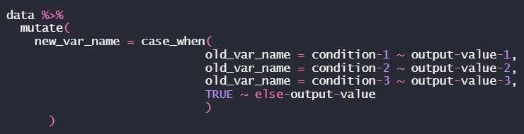
The TRUE~ is equivalent to the ‘else’ in the ‘if-else’ statement.
It is important to note that the conditions are evaluated in order, therefore one must proceed from the most specific to the most general condition.
Let’s demonstrate how case_when works with these examples using the Australia Soybean 1970 dataset.
We are going to create four lodging categories such as >=1 = ‘No Lodging’, >=1.5 = ‘Mild Lodging’, >=2.5 = ‘Moderate Lodging’, and >=3.5 = ‘Heavy Lodging’.
Also, we may be interested in creating a new variable from the existing categorical variable.
Let’s use the new data set dat_new to demonstrate this process using mutate and case_when functions and introduce the IN operator %in% i.e. We create two lodging categories such that 'No Lodging' and 'Mild Lodging' will be "No Lodging", and 'Moderate Lodging' and 'Heavy Lodging' will be "Lodging".
As we all know that data comes in different formats, numeric or non-numeric (text/string) data format. Data wrangling of non-numeric data sometimes requires splitting of the cell into multiple individual cells or combining multiple cells into a single cell before analysis.
There are some functions in the tidyverse package used for this purpose such as unite(), separate(), and str_sub().
unite(): collapse cells across several columns into a single column.
separate(): separate each cell in a column into several columns.
str_sub(): extract a substring from a character vector.
Let’s use a fictitious data set called BadData to demonstrate how these functions work.
The data set has seven (7) variables: Gen: A combination of location, genotype, and replication, Year: Year of trials, Traits: Measured traits (Trait1 – Trait5)
Also, we may be interested in creating a new variable which will be a combination of at least two variables. Suppose we want to create a variable called environment (Env) using the data set above by combining the Location and Year together.
dat1 <- dat1 |>unite(Location, Year, col ="Env", sep ="-")dat1
Import Example-02.csv to R and save it to an object named example02 Display the example02 object filter the data by considering: locations Nambour and RedlandBay genotypes G01, G57, and G58, location Brookstead for the year 1970 location Lawes yield between 2 and 3 inclusive, oil greater than 22
Import Example-02.csv to R and save to an object named example02 Create a new variable called ENV by combining the first three letters in loc and the last two digit in year. Categorize the yield values of at least 3 as "High" and other values as "Low" into a new variable called yield_grp. Select ENV, gen, yield, yield_grp, height, and oil and transform the dataset using appropriate variables as traits.